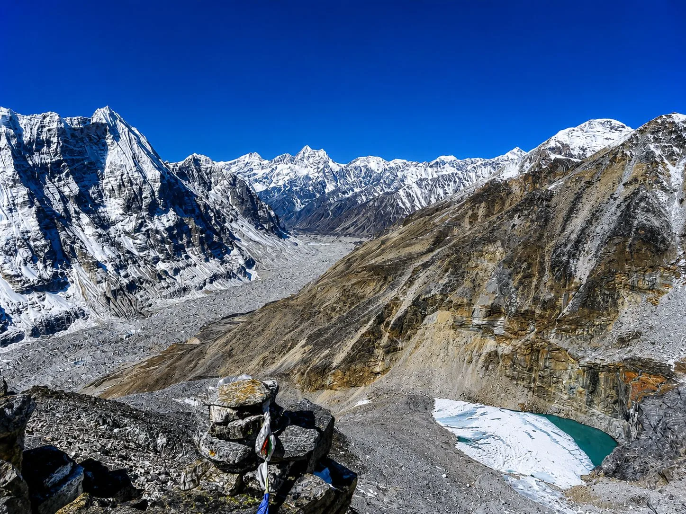
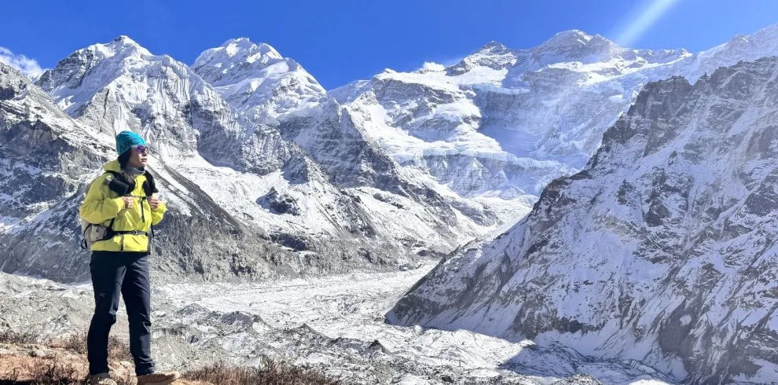
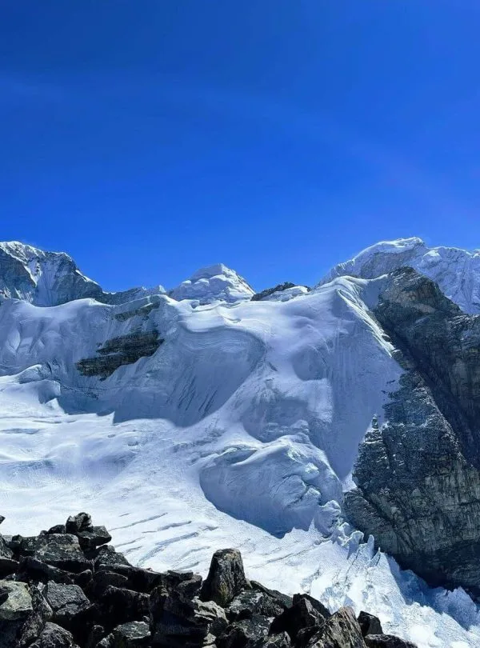

1. The Eastern Himalayan Autumn Microclimate: Why Kanchenjunga Differs from Central Nepal

Mount Kanchenjunga (8,586 m / 28,169 ft) anchors the far eastern border of Nepal, nestled tightly between Sikkim (India) and the Tibetan plateau. Because of its eastern geographical longitude (88°09′ E), Kanchenjunga experiences weather patterns distinct from the popular central trekking hubs of Everest (86°55′ E) and Annapurna (83°49′ E).
The most decisive meteorological factor in eastern Nepal is its geographic proximity to the Bay of Bengal. The summer Indian monsoon sweeps northward from the ocean directly into the eastern Himalayas first and departs last. While Everest and Annapurna often see clear skies by mid-September, Kanchenjunga’s valleys typically retain residual cloud cover and intermittent drizzle through the third or fourth week of September.
However, once the continental winter high-pressure ridge establishes itself in early October, Kanchenjunga transforms into an alpine paradise. The atmosphere becomes remarkably pure, visibility frequently extends across hundreds of square kilometers into Sikkim and Tibet, and the vast glacial basins of Pangpema and Oktang sparkle beneath immaculate sapphire skies.
Because monsoon moisture tracks from east to west across the subcontinent, autumn arrives in Kanchenjunga approximately one to two weeks later than in the Annapurna or Langtang regions. Trekkers planning a Kanchenjunga Circuit should target start dates between October 5 and October 25 to ensure dry trails in the lower subtropical valleys and rock-solid weather on the high passes.
2. Month-by-Month Autumn Weather Breakdown (September, October, November)

The autumn trekking window in Kanchenjunga is divided into three distinct phases, each offering unique atmospheric conditions, temperatures, and trail dynamics:
- September (The Wet-to-Dry Transition): Early September remains under the influence of late monsoon rain. The lower cardamom forests between Taplejung, Mitlung, and Sekathum are humid, muddy, and populated by active leeches. Rivers roar with heavy glacial meltwater. However, after September 22–25, rainfall drops dramatically, cloud ceilings rise, and the first crisp mountain views emerge. If you hike in late September, expect warm days, lush green scenery, roaring waterfalls, and total trail solitude.
- October (The Peak Gold Standard): October is universally celebrated by Himalayan guides as the single finest month to trek the Kanchenjunga Circuit. Rainfall is virtually non-existent, daytime temperatures at mid-elevations (Ghunsa and Cheram) are a pleasant 10°C to 14°C, and night temperatures at Base Camp are manageable (-6°C to -12°C). The autumn foliage turns blazing gold, mountain visibility is crystalline, and pass crossings over Sele La are dry and safe.
- November (Crisp, Cold & Solitary): Early November retains pristine, cloudless skies from morning until sunset. However, winter cold sets in rapidly. By mid-November, night temperatures at Lhonak (4,780m) plunge to -16°C or lower. High altitude water pipes freeze overnight, and thin black ice forms on morning rock slabs along the Sele La and Mirgin La passes. By late November, seasonal teahouse owners begin packing their belongings to migrate down to Phidim and Kathmandu for winter.
Early Autumn (Late Sept – Early Oct)
- Warmer Temperatures: Comfortable evenings and mild high camps.
- Vibrant Green Valleys: Rushing rivers, alpine waterfalls, and lush vegetation.
- Leeches in Lower Reaches: Requires gaiters and salt below Sekathum.
- Occasional Afternoon Showers: Lingering cloud cover below 3,000m.
Peak & Late Autumn (Mid Oct – Nov)
- Spotless Blue Skies: Flawless photographic clarity across Sikkim and Tibet.
- Zero Leeches: Drier trails and completely insect-free forests.
- Sub-Zero Nights: Freezing high camps requiring a -20°C sleeping bag.
- Icy Morning Passes: Microspikes necessary for frosted scree on Sele La.
3. Temperature & Precipitation Altitude Profile Table (From 1,500m to 5,143m)
Because the Kanchenjunga Circuit spans over 3,500 vertical meters of elevation gain, temperature varies dramatically depending on whether you are trekking along the subtropical Tamor River or standing beside the frozen moraines of Pangpema.
Here is an elevation-by-elevation meteorological reference for the autumn months:
| Elevation Zone / Stop | Altitude (m) | October Day (°C) | October Night (°C) | November Day (°C) | November Night (°C) | Precipitation / Snow |
|---|---|---|---|---|---|---|
| Taplejung / Mitlung | 1,820m / 900m | 20°C to 25°C | 12°C to 16°C | 16°C to 20°C | 8°C to 12°C | Rare rain showers |
| Sekathum / Amjilosa | 1,660m / 2,510m | 16°C to 21°C | 8°C to 12°C | 13°C to 17°C | 4°C to 8°C | Minimal / Clear |
| Gyabla / Phale | 2,730m / 3,140m | 14°C to 18°C | 4°C to 8°C | 10°C to 14°C | 0°C to 4°C | Clear skies |
| Ghunsa (Sherpa Hub) | 3,595m | 11°C to 15°C | -1°C to 3°C | 7°C to 11°C | -5°C to -1°C | Crisp & sunny |
| Kambachen | 4,050m | 8°C to 12°C | -5°C to -1°C | 4°C to 8°C | -10°C to -6°C | Occasional flurries |
| Lhonak (High Camp) | 4,780m | 4°C to 8°C | -10°C to -6°C | 0°C to 4°C | -16°C to -11°C | Cold glacier wind |
| Pangpema (North Base Camp) | 5,143m | 1°C to 5°C | -14°C to -9°C | -3°C to 1°C | -20°C to -15°C | Freezing katabatic wind |
| Sele La Pass Crossing | 4,480m – 4,645m | 3°C to 7°C | -8°C to -4°C | -1°C to 3°C | -14°C to -10°C | Morning ice & scree |
| Cheram / Tortong | 3,870m / 2,995m | 10°C to 14°C | -2°C to 2°C | 6°C to 10°C | -6°C to -2°C | Clear & stable |
| Oktang (South Base Camp) | 4,730m | 3°C to 7°C | -11°C to -7°C | -1°C to 3°C | -17°C to -12°C | Glacial windchill |
4. High Pass Dynamics in Autumn: Sele La, Mirgin La & Sinion La (4,480m - 4,645m)

The most demanding day of the entire Kanchenjunga Circuit is the traverse linking the North Base Camp route to the South Base Camp route. Unlike simple single-col passes like Thorong La on the Annapurna Circuit, the Kanchenjunga traverse involves crossing a series of consecutive high passes:
- Sele La Pass (4,290m – 4,480m)
- Sinion La (4,440m)
- Mirgin La (4,480m)
- Sinlapche La (4,645m)
In October, this traverse is an unforgettable alpine highlight. Under cloudless skies, you enjoy jaw-dropping panoramic views of Jannu (Kumbhakarna, 7,710m), Makalu (8,485m), and the Kabru chain. Trails are dry, and footing over the boulder fields and scree slopes is firm and predictable.
In November, conditions turn more serious. Overnight frost freezes loose gravel into solid slabs, and thin black ice often coats rock steps. A sudden early winter snowfall can obscure the narrow cairn-marked trail, making navigation tricky. Setting out at 5:30 AM from the basic stone huts at Sele Le Camp ensures you cross all four ridges and drop into Cheram (3,870m) before afternoon mountain shadows drop temperatures below freezing.
Even in dry autumn conditions, freezing meltwater across shaded northern couloirs creates slick patches of ice on the descent toward Cheram. Always keep lightweight microspikes and trekking poles easily accessible in your daypack, rather than packed away in your porter’s duffel bag.
5. North Base Camp (Pangpema, 5,143m) Weather & Glacier Windchill

Reaching Pangpema (5,143m), the North Base Camp of Mount Kanchenjunga, is the ultimate goal of the northern trek. Situated on an open grassy shelf directly opposite the colossal, sheer North Face of Kanchenjunga and the striking fluted pyramid of Wedge Peak (Chang Himal, 6,802m), Pangpema offers one of the most intimidating mountain vistas on Earth.
However, Pangpema is subjected to severe alpine weather, even in peak October:
- Katabatic Glacier Winds: As cold, dense air descends from the high ice fields of Kanchenjunga and the Tibetan plateau, powerful downhill winds funnel along the glacier trough. Wind speeds commonly reach 35 to 50 km/h between 11:00 AM and 4:00 PM.
- Extreme Windchill: While midday ambient air temperatures in October hover around 2°C to 5°C in the sun, relentless windchill makes it feel like -10°C. Heavy down jackets, windproof hoods, and fleece-lined gloves are mandatory for lingering at the viewpoint.
- Lhonak High Camp Logistics: Most trekkers base themselves at the rustic stone teahouses in Lhonak (4,780m) and make a day-trip hike to Pangpema (approx. 4 hours each way). This eliminates the need to sleep in Pangpema's unheated, freezing emergency shelter where night temperatures drop below -18°C.
6. South Base Camp (Oktang & Yalung Glacier, 4,730m) Autumn Atmosphere
After completing the high pass traverse to the southern valley, trekkers push up the Simbuwa Khola gorge through Cheram and Ramche to reach Oktang (4,730m), the South Base Camp viewpoint overlooking the immense Yalung Glacier.
The southern flank of Kanchenjunga exhibits a notably warmer, slightly more sheltered microclimate than the wind-blasted northern face:
- The Colossal South Face: At Oktang, you stand directly opposite the main summit of Kanchenjunga (8,586m), Kanchenjunga Central (8,482m), Kanchenjunga South (8,476m), and the dramatic sentinels of Kabru (7,412m) and Rathong (6,678m).
- Morning Inversion Clouds: Autumn mornings at Oktang are exceptionally clear and calm. Early sunrise illuminates the south face in vivid orange and golden hues. Around 1:00 PM, soft valley inversion clouds frequently drift up the Yalung valley, creating an atmospheric sea of clouds below your feet while the 8,000-meter peaks remain bathed in bright sunlight.
- Comfortable Retreat to Cheram: Unlike Lhonak on the north side, the southern base camp approach allows trekkers to descend quickly to Cheram (3,870m), which sits below the tree line among subalpine birch and juniper forests where night temperatures are considerably milder.
7. Subtropical River Gorges to Glacial Tundra: Climate Transition Zones
One of the greatest wonders of the Kanchenjunga Circuit is its extraordinary ecological transect. In a span of just 10 days, you walk from humid subtropical valleys where wild bananas and cardamom flourish to permafrost arctic tundra:
Zone 1: Subtropical Gorges (900m – 2,200m)
Villages: Mitlung, Chirwa, Sekathum.
Autumn Climate: Warm, balmy, and humid (18°C to 24°C). Lush bamboo forests, terraced rice paddies, blooming poinsettias, and cardamom plantations along the roaring Tamor and Ghunsa rivers.
Zone 2: Temperate Cloud Forest (2,200m – 3,200m)
Villages: Amjilosa, Gyabla, Phale.
Autumn Climate: Mild days (14°C to 18°C), crisp evenings (4°C to 8°C). Dense moss-draped forests of oak, fir, hemlock, and vibrant rhododendrons, alive with red pandas and musk deer.
Zone 3: Subalpine Conifer Belt (3,200m – 4,200m)
Villages: Ghunsa, Kambachen, Cheram.
Autumn Climate: Crisp, sunny days (8°C to 13°C), freezing nights (-2°C to -6°C). Golden deciduous larch groves, juniper woodlands, yak pastures, and traditional stone Tibetan-Buddhist settlements.
Zone 4: Arctic Alpine Moraine (4,200m – 5,143m)
Villages: Lhonak, Pangpema, Oktang.
Autumn Climate: Severe alpine desert (-10°C to -20°C at night). Bare glacial till, permafrost, towering lateral moraines, fluted ice pyramids, and pure wilderness.
8. Rain, Leeches & Mud: Managing the Early Autumn Shoulder (Late September)
If your travel schedule requires starting in mid-to-late September, you must be prepared for the lingering tail of the eastern monsoon. In the deep river gorges below 2,000 meters, high humidity and damp leaf litter create prime conditions for Himalayan leeches (known locally as juka).
Follow these proven field strategies to navigate the early autumn shoulder:
- Leech-Proofing Your Footwear: Wear tightly woven trail gaiters treated with high-concentration DEET spray. Tuck your hiking trousers securely inside your wool socks. Carry a small pouch of table salt or tobacco powder to detach any stubborn leeches painlessly.
- River Crossings & Bridges: September rivers run high with late monsoon runoff. Government and local committees maintain sturdy steel suspension bridges along the main routes, but temporary wooden plank bridges across tributary streams can be slippery. Tread carefully and always use trekking poles for third-point stability.
- Waterproof Dry Bags: Protect your clothing, sleeping bag, and electronics by packing them inside heavy-duty waterproof roll-top dry sacks inside your porter duffel bag.
9. Daylight Hours, Solar Radiation & Diurnal Weather Patterns in Far Eastern Nepal
Because Kanchenjunga sits on Nepal's far eastern border (longitude 88°E), the sun rises and sets approximately 20 to 25 minutes earlier than in Kathmandu, and nearly 30 minutes earlier than in Pokhara or Annapurna.
Understanding this eastern solar shift is crucial for daily trail planning:
- Sunrise & Dawn (05:45 AM – 06:15 AM): First light strikes the 8,000-meter summit peaks around 5:30 AM in October, with direct sunlight reaching valley floors by 6:30 AM.
- Midday Heat & UV Radiation (10:00 AM – 01:30 PM): At elevations between 3,500m and 5,000m, thin mountain air filters very little ultraviolet light. High-SPF sunscreen (50+), UV-blocking glacier sunglasses, and a wide-brimmed sun hat are non-negotiable to prevent severe altitude sunburn and snow blindness.
- Afternoon Shadow & Sunset (04:45 PM – 05:15 PM): Deep, narrow Himalayan valleys lose direct sunlight early. Once the sun dips behind the towering mountain ridges around 4:30 PM, ambient temperatures drop instantly by 10°C to 15°C within minutes. Arriving at your teahouse by 3:30 PM ensures you settle in comfortably before the evening freeze.
10. Essential Autumn Packing & Layering Strategy for 20–24 Days in the Wild

Because the Kanchenjunga Circuit is a long expedition (typically 20 to 24 days) in a remote region with no gear shops along the trail, your equipment must be reliable, durable, and versatile.
Sleep & Cold Weather Essentials
- Expedition Sleeping Bag: 4-season down sleeping bag rated to -15°C or -20°C (lodge rooms in Lhonak and Cheram have zero wall insulation).
- Sleeping Bag Liner: Silk or thermal fleece liner adding 3°C–5°C of warmth and keeping your bag clean.
- Heavyweight Down Jacket: 800+ fill power down parka with an insulated hood for sub-zero evenings.
- Thermal Flask (1L): Insulated stainless-steel thermos to keep boiled water hot overnight and prevent drinking water from freezing on the trail.
Technical Footwear & Traction
- Sturdy Mountain Boots: Waterproof, broken-in trekking boots with rigid Vibram soles and ankle support for uneven boulder fields.
- Microspikes / Ice Grips: Essential for crossing frozen morning scree and frosted rock slabs on Sele La.
- Gaiters: Low gaiters for dust and scree in October; tall gaiters for mud in September.
- Telescopic Poles: Sturdy aluminum or carbon poles to cushion knees on 1,500m descents.
11. Teahouse Operations & High-Camp Availability During Autumn
Historically, the Kanchenjunga Circuit was an exclusive, fully supported tent-camping expedition. Over the past decade, local Sherpa, Limbu, and Tibetan communities have established a network of rustic, family-run teahouses and lodges throughout the entire circuit.
Here is what you must anticipate regarding autumn lodge operations:
- Peak Operating Window (October to mid-November): All teahouses in Ghunsa, Kambachen, Lhonak, Sele Le, Cheram, and Tortong are fully open and staffed during October and early November.
- Dining Hall Heart: Evenings revolve around the central dining hall, where a wood- or dried-yak-dung-burning stove provides cozy communal warmth. Meals are freshly cooked and hearty, featuring organic potatoes, buckwheat pancakes, noodle soups, tsampa, and unlimited servings of hot Dal Bhat.
- End-of-Season Closures (Late November): Due to extreme winter cold, high-altitude lodges in Lhonak, Sele Le, and Cheram close their doors by late November as lodge owners migrate down to warmer towns. If trekking in mid-to-late November, our expedition agency pre-verifies lodge status with local coordinators in Ghunsa.
12. Health, Altitude Acclimatization & AMS Risks in Cold Autumn Air
The cold, dry autumn air combined with progressive elevation gain creates specific physiological challenges on the Kanchenjunga Circuit:
- Cold-Induced Bronchial Irritation: Breathing frigid, bone-dry air above 4,000m causes airway dryness and coughing (similar to the famous Khumbu cough). Wearing a buff, lightweight fleece balaclava, or merino neck gaiter over your nose and mouth humidifies every breath and prevents throat irritation.
- Structured Acclimatization Rest Days: Our itinerary builds two mandatory acclimatization rest days into the northern ascent:
- Day 1 in Ghunsa (3,595m): Acclimatization hike to the spectacular Yamatari Glacier and ridge viewpoint (approx. 4,200m).
- Day 2 in Kambachen (4,050m): Rest day hike toward the base of Mount Jannu (Kumbhakarna) to prepare red blood cell count for Lhonak (4,780m) and Pangpema (5,143m).
- Hydration & Electrolytes: In cold weather, thirst sensations diminish by up to 40%, yet your respiratory water loss increases significantly. Drink a strict minimum of 3.5 to 4 liters of purified hot fluids daily (ginger-lemon tea, garlic soup, and electrolyte water).
13. Remote Transport & Overland Road Access in Autumn (Bhadrapur, Ilam, Suketar)
Reaching the trailhead in Taplejung is an adventure in itself. Because eastern Nepal lacks high-capacity transport infrastructure, autumn access follows two primary routes:
- Flight to Bhadrapur + Overland 4WD Jeep (Most Reliable): Fly 45 minutes from Kathmandu to Bhadrapur Airport in the eastern Terai lowlands, followed by a scenic 4WD Jeep journey ascending through the lush rolling tea hills of Kanyam and Ilam, continuing through Phidim to Taplejung. In autumn, the post-monsoon roads dry out, making this overland drive reliable and breathtakingly beautiful.
- Flight to Suketar Airport (Taplejung): Direct STOL flights operate seasonally from Kathmandu to Suketar (2,420m). While convenient, Suketar flights are notorious for frequent cancellations due to morning valley mist and crosswinds. The Bhadrapur overland route remains the preferred, dependable option.
Due to the overland driving distance from Taplejung back to Bhadrapur (approx. 9–11 hours), always build at least two buffer days at the end of your itinerary in Kathmandu before international flights. This prevents stress in the event of minor highway maintenance or localized road delays.
14. Autumnal Flora, Golden Larches & Harvest Culture in Taplejung
Autumn in Kanchenjunga is not just about snowy peaks—it is the season of vibrant harvest festivals, traditional mountain agriculture, and rare botanical spectacles:
- The Golden Larch Phenomenon (Larix griffithii): The upper Ghunsa and Kambachen valleys feature dense groves of Larix griffithii (Sikkim Larch), the only deciduous conifer species native to the Himalayas. In late October, its soft needle clusters turn brilliant amber and gold, creating a stunning visual contrast against sheer granite cliffs and hanging glaciers.
- Cardamom (Alaichi) Harvest: Taplejung is the heart of Nepal’s black cardamom production. In September and October, lower Limbu and Rai villages bustle with activity as farmers harvest cardamom pods from river terraces and cure them over traditional smoke kilns (bhatti), filling the forest trails with sweet, aromatic spices.
- Himalayan Wildlife: With autumn silence replacing summer rains, encounters with wild blue sheep (bharal) grazing on the moraines near Lhonak are common. The Kanchenjunga Conservation Area is also a global biodiversity stronghold for the endangered snow leopard, red panda, and Himalayan black bear.
15. Restricted Area Permits (RAP), Group Regulations & 2026/2027 Guidelines

Because Kanchenjunga borders sensitive international frontiers with Tibet and India, the Government of Nepal categorizes the region as a Special Restricted Area.
Here are the mandatory permit guidelines and regulations enforced for 2026 and 2027:
| Permit Type | Issuing Authority | Fee Structure (2026/2027) | Mandatory Conditions |
|---|---|---|---|
| Restricted Area Permit (RAP) | Nepal Department of Immigration | $20 USD per person / week (for first 4 weeks) | Minimum 2 foreign trekkers + licensed Nepali guide |
| Kanchenjunga Conservation Area (KCAP) | Department of National Parks (DNPWC) | NPR 2,000 (~$15 USD) per person | Valid for entire duration of the trek |
Critical Legal Note: Solo independent trekking without a guide is strictly illegal in the Kanchenjunga region. All permits must be processed through a licensed, government-registered trekking agency like Igloo Himalaya Treks, and groups must be accompanied by a certified Nepali guide from trailhead to finish.
Frequently Asked Questions About Kanchenjunga Autumn Weather
Select a category below to explore expert answers to the most common questions travelers ask about Kanchenjunga Autumn Weather:
General & Planning

Ready to Experience the Himalayas?
Whether you are preparing for high-altitude trekking, cultural circuits, or alpine summit expeditions, start planning a bespoke journey tailored to your fitness, travel season, and style.